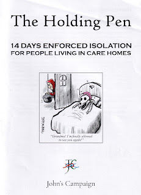

{kind=link}
Then the pandemic strikes and the Hill Topp table top sale must be cancelled (though Cheltenham races need not). When Mrs McBryde develops Covid
symptoms and is taken to hospital, she’s so sure that the virus belongs only in
places like Low Moor (and will only affect ‘old people and the occasional
Asian’) that her last conversations with the doctor are spent explaining why it
isn’t fair. ‘Incipient dementia’ he notes on her record. There’s no ventilator
available for her and she dies in the hospital corridor.
Bennett’s novella doesn’t express the anguish
of actual death. Today I was reading the testimony of a former nurse, the widow
of a care home manager who killed himself in the pandemic, traumatised by the
experience of watching his residents die, gasping for breath, because he had no
oxygen to give them. The local GPs would not come into his care home, because
of the risk of infection; the wi-fi necessary for virtual examination didn’t
reach the sick residents’ bedrooms so they couldn’t be examined by the GP, even
remotely – but only the GPs could prescribe oxygen.
His widow said, ‘To watch these
patients, they were gasping for oxygen and I couldn’t give them any relief as a
nurse. I found that incredibly hard. For Vernon to watch it was horrendous -
because we could not give them any relief.’ (https://www.itv.com/news/2021-01-20/widow-of-care-home-manager-who-took-his-own-life-the-only-reason-this-happened-was-because-of-covid)
Killing Time magicks away care
home managers’ struggles to get PPE and test kits; to understand and comply
with a barrage of ill-informed government guidance and diktats from public
health officials; to struggle with the
frequent shortages of palliative care medication and the absence of trained
personnel to administer it. Bennett’s High Topp residents don’t suffer the
confusion and distress of feeling abandoned by those they love; they are not
isolated in their rooms for 14 days at a time either because someone else has
tested positive or because they have been so reckless as to leave the home to
attend a hospital appointment or meet a family member.
Instead, once
Mrs McBryde is gone and Zulema, the single staff member, has also been
hospitalised, the residents of Hill Topp begin managing their own lives. They
build a glorious fire in the grounds and keep it going night and day as they
burn fallen branches and broken chairs, the furniture from emptied rooms and
the walking sticks, shoes, flat caps and hearing aids of the dead.
Because they do
die. But they do it off stage, and no one mourns them when they’re gone. Meanwhile
the survivors eat curries delivered from a local convenience store, make masks
out of ball gowns or old vests, discuss the new situation with sublime
ignorance and enjoy themselves. Bennet describes their new community life,
without the genteel tyranny of Mrs McBryde, as having the flavour of
‘embarkation leave’.

{kind=link}
It was hard on
young and old alike. Jenny described her 42-year-old daughter with learning
difficulties who had not been allowed to visit her family at home for 18months
yet had also endured two 14-day periods of isolation, first when a PCR test was
lost and secondly when she caught Covid from a staff member:
She has become
very anxious. Feel she is in prison and scared of all the rules. I have been
allowed to visit her outside now but she's anxious the whole time. She
desperately needs to be able to come home. But I just cannot put her through
another 14 days in her bedroom. Not even the house and garden like other
people, but just a bedroom. It does feel like imprisonment.
For Linda’s
100-year-old mother it was even worse:
My mum was used
to going out of the care home at least three times a week and seeing her
children, grandchildren and great grandchildren […] From March until Christmas,
the only time she left her care home was to go to hospital for two days and
then for check-up. Visits varied from visiting her on a decking shouting
through a double-glazed door, window visits, to no visiting at all. Then half hour
visits in a designated room with full PPE. As Mum is very deaf all these were
horrendous.
Mum said it was
worse than being a prisoner. Prisoners got visits and had access to fresh air.
During this time the home had three positive tests resulting in three lots of
14 days isolation when mum had no exercise, no fresh air, no company, no
stimulation. Prisons are told no more than 72 hours isolation.
At Christmas, Mum
was desperate to go outside and see grandchildren and great grandchildren. As Mum
was of sound mind, I argued to bring her home. Because of further lockdown, she
was only allowed a day at home. The price she paid was a further 10 days in
isolation. In March, she was 100 years old. Again, I argued, bring her home so
we could celebrate this special birthday. She came home for six days. In
return, she had to isolate a further 14 days.
She has been
isolated for a total of 65 days in 15 months. During this last period, she
became very depressed, ringing us on her iPad, crying, refusing to talk because
she had nothing to talk about. Wishing she could have fresh air and feel the
sun on her face.
Aged 100 she too would have liked to 'frolic'.